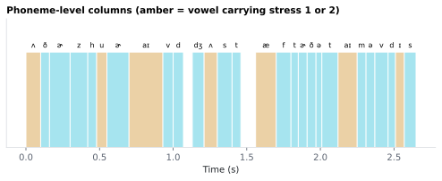

6.3.6Phoneme-level columns
One row per phone (phoneme) in phoneme/<stim>_phonemes.csv.
6.3.6.1What it is
One row per phone (phoneme) in phoneme/<stim>_phonemes.csv. Each row
joins back to its word and syllable via
(doc_id, sentence_id, token_in_sentence_id, syllable_id, phoneme_id).
| Column | Type | Meaning |
|---|---|---|
ARPABET |
str | The bare ARPABET segment, with no stress digit: EY, D, IY. For an out-of-dictionary word MFA could not pronounce, the literal spn (see Pron_Source below). |
Stress |
nullable integer (Int64) |
0, 1 or 2 on vowels; empty on consonants. See the warning below — empty and 0 are different claims. |
IPA |
str | The single IPA segment for this phone, e.g. eɪ, d, ɹ. Empty for spn and for any code outside the 39-phone set. Derived from ARPABET and Stress together — see IPA. |
Pron_Source |
str | Where the pronunciation came from: dictionary, g2p, or oov_unresolved. |
Onset |
float (s) | Time the phone begins, in seconds from audio start. |
End |
float (s) | Time the phone ends, in seconds from audio start. |
Duration |
float (s) | End − Onset. |
Example — the first two syllables of Adrianna:
token syllable_id phoneme_id ARPABET Stress IPA Pron_Source Onset End
Adrianna 1 1 EY 2 eɪ dictionary 0.00 0.12
Adrianna 2 1 D d dictionary 0.12 0.20
Adrianna 2 2 R ɹ dictionary 0.20 0.25
Adrianna 2 3 IY 0 i dictionary 0.25 0.34
These three columns let you filter or group without string surgery
(EY2 is stored as ARPABET=EY, Stress=2). There is no fused label
column; ARPABET + Stress reproduces it if needed. (The syllable CSV's
Label and ARPABET columns are unrelated; see
syllable_labels.)
⚠️ Stress: empty ≠ 0
This is the one column in the file that is easy to misread, and misreading it is a silent analysis error rather than a crash:
- Empty (
NA) means stress does not apply to this segment. Every consonant row is empty. ARPABET simply does not mark stress on consonants — it is a property of the vowel nucleus, not of the syllable's onset or coda (CMUdict). 0means this is a vowel, and it is unstressed. It is a measurement, not a missing value.
Collapsing the two (e.g. df.Stress.fillna(0), or reading the column as
plain int64, which cannot hold a missing value) turns every consonant
in the corpus into an unstressed vowel. That is why the column is stored
as pandas' nullable Int64 and written to CSV as an empty field, and
why Stress == 0 is the correct filter for unstressed vowels while
Stress.notna() is the correct filter for "is this segment a vowel".
To rebuild a fused label: ARPABET + Stress.astype("string").fillna("").
Pron_Source — where the pronunciation came from
MFA is a lexicon-driven aligner: it looks each word up in
english_us_arpa.dict to know which phones to look for. This column
records what happened at that lookup, per word (every phone row of a
word carries the same value).
| Value | Meaning |
|---|---|
dictionary |
The word was in MFA's pronunciation dictionary. Its phone sequence is the dictionary's, aligned to the audio. This is the overwhelming majority of rows. |
g2p |
The word was not in the dictionary, and the optional G2P option was on, so MFA generated a pronunciation from the spelling and aligned that. The phone identities are modeled, not observed — treat them as a hypothesis. |
oov_unresolved |
The word was not in the dictionary and no pronunciation could be generated, so MFA aligned it to its single unknown-word phone, spn. The row carries ARPABET = 'spn', empty Stress, empty IPA, and the word's real MFA timing. |
⚠️ oov_unresolved does not mean "the word wasn't spoken"
It means MFA had no pronunciation for the word — nothing more. The word is still in the transcript, still aligned, and still occupies a real interval in the audio. What is missing is the phone identity, not the speech.
The reverse reading is the tempting one and it is wrong. MFA is a
forced aligner: it assumes the transcript is what was said and must
place every word somewhere (McAuliffe 2017). It has no "this word is
absent from the audio" output at all — for any word, in-dictionary or
not. If you need to know whether a word was actually uttered, this
column cannot tell you, and neither can any other column in this
release; see g2p_oov for why that is out of scope.
Practically: oov_unresolved rows are the ones to exclude from
phoneme-identity analyses (they have no identity), and to keep in
timing analyses (their Onset/End/Duration are as real as any other
word's). phoneme_surprisal already scores them
NaN for exactly this reason.
⚠️ Some tokens legitimately have no phoneme rows
A word-CSV token with zero rows in this file is expected in two cases, and is deliberate:
-
Punctuation and unaligned tokens. They have no acoustic interval, so there is nothing to attach phones to.
-
Tokens that share one MFA word with the token before them. spaCy splits
wasn'tinto two tokens,was+n't; MFA has a single wordwasn'twith a single phone sequence. Possessives behave the same way (debtor's→debtor+'s). The phones are emitted once, under the first token, because emitting them under both would duplicate the same acoustic segments (it would inflate row counts and double thephoneme_surprisal.matimpulse trains).The word CSV's
Transcriptcolumn is what identifies the sharing: bothwasandn'tcarryTranscript = "wasn't"and the sameOnset/End. So to find a token's phones, join on the first token holding that(Onset, End)pair — or, equivalently, treat the shared MFA word as the unit.We deliberately do not split clitic phones between the two tokens. Doing so needs a hand-maintained rule table (
n't→N T,'s→Z…) that mis-splits silently on edge cases, and inwasn'tthe vowelAH0belongs cleanly to neither token.
6.3.6.2See it

6.3.6.3In your output
| token | phoneme_id | ARPABET | Stress | IPA | Pron_Source | Onset seconds | End seconds | Duration seconds |
|---|---|---|---|---|---|---|---|---|
| Others | 1 | AH | 1 | ʌ | dictionary | 0 | 0.1 | 0.1 |
| Others | 1 | DH | ð | dictionary | 0.1 | 0.16 | 0.06 | |
| Others | 2 | ER | 0 | ɚ | dictionary | 0.16 | 0.3 | 0.14 |
| Others | 3 | Z | z | dictionary | 0.3 | 0.42 | 0.12 | |
| who | 1 | HH | h | dictionary | 0.42 | 0.48 | 0.06 | |
| who | 2 | UW | 1 | u | dictionary | 0.48 | 0.55 | 0.07 |
| arrived | 1 | ER | 0 | ɚ | dictionary | 0.55 | 0.7 | 0.15 |
| arrived | 1 | AY | 1 | aɪ | dictionary | 0.7 | 0.93 | 0.23 |
| arrived | 2 | V | v | dictionary | 0.93 | 1 | 0.07 | |
| arrived | 3 | D | d | dictionary | 1 | 1.07 | 0.07 | |
| just | 1 | JH | dʒ | dictionary | 1.13 | 1.21 | 0.08 | |
| just | 2 | AH | 1 | ʌ | dictionary | 1.21 | 1.3 | 0.09 |
6.3.6.4MATLAB
% Load the phoneme-level table (one row per phoneme)
T = readtable('phoneme/LJ002-0321_phonemes.csv', 'TextType', 'string');
T.Properties.VariableNames % every column in the file
head(T(:, {'token', 'phoneme_id', 'ARPABET', 'Stress', 'IPA', 'Pron_Source', 'Onset', 'End', 'Duration'}), 10) % this feature's columns (first rows)
% Plot
ok = ~isnan(T.Onset);
stem((T.Onset(ok) + T.End(ok)) / 2, T.Duration(ok)); xlabel('Time (s)'); ylabel('Duration')
6.3.6.5In the code
Source: sensi/extractors/syllabify.py:syllabify_pairs (downstream of MFA
alignment), with the IPA lookup in sensi/extractors/arpabet_ipa.py.
Phone selection. utils.textgrid_parser:parse_phones parses the
phones tier of MFA's TextGrid; _phones_for_word then assigns each
phone to the word whose [Onset, End] interval contains it (with a 1 µs
tolerance for MFA's millisecond stamping). phoneme_id is a per-syllable
1-indexed counter, so phoneme_id == 1 is the first phone of its
syllable, not of the word.
Splitting the label. _split_label peels a trailing digit off MFA's
label: 'EY2' → ('EY', 2), 'D' → ('D', None). None becomes NA
in the nullable Int64 Stress column, which is the mechanism behind the
empty-vs-0 distinction above — a plain int64 column physically cannot
represent both.
Silence filtering.
parse_phones drops '', sil, SIL and sp as silence. It keeps
spn, MFA's unknown-word phone, so an out-of-dictionary word is never
silently missing from the sub-word CSVs (e.g. a nonsense word such as
Zorblax appears in the words tier with a single spn in the phones
tier). The word yields
one syllable and one phoneme row with its real timing and
Pron_Source = 'oov_unresolved'. Phone.is_vowel is False for spn
(no trailing digit), so syllabify_word takes its existing vowel-less
branch — the same path as an interjection like hmm — and emits a single
syllable. No new branch.
Deduplicating shared alignments. syllabify_pairs tracks the
(doc_id, Onset, End) intervals it has already emitted, rounded to 6
decimals, and skips a token whose interval a previous token already
claimed. This is the align_merge join case (was + n't → wasn't)
described above.
Zero-phoneme reporting. Any word that survives to the phone lookup and still ends up with no phones is collected and reported to stderr and the run log:
[phonemes] WARNING: 2 words had no phonemes (likely OOV): zorblax, mciver
This is a belt-and-braces guard — it fires if, for example, a collaborator's checkout is missing the G2P model. Punctuation and shared-alignment tokens never reach that list; their absence is expected.
Deriving Pron_Source. MFA does not mark G2P-derived words in the
TextGrid, so provenance is inferred: a word absent from
english_us_arpa.dict must have had its pronunciation generated. Any
spn phone short-circuits to oov_unresolved.
The form checked is the MFA words-tier form — the word frame's
Transcript column — never the spaCy token, and that distinction is
load-bearing. sensi/utils/transcript_prep.py spells numbers out before
handing the transcript to MFA, so spaCy's token is 48 while MFA's word
is forty eight. Judging by the token would find 48 absent from the
dictionary and label every number in the corpus g2p; verified against
the real stimuli, where 48, 2, 6, 8, 10 and 3 are all absent
as digit strings and all present as their spelled forms. A Transcript
holding several space-separated words (the align_merge expand case)
counts as dictionary only when every part is in the lexicon. If the
dictionary file is unreadable, the code reports dictionary rather than
mislabelling the whole corpus g2p.
The lexicon key set is memoized in _lexicon_words(), reading the same
english_us_arpa.dict that phoneme_surprisal
already parses, so a run does not read the 200k-line file twice.
Per-column toggles. Each of the seven columns can be dropped
independently from the Sub-word GUI page, wired through
_PHONEME_COLUMN_MAP in sensi/pipeline.py. Dropping Stress does not change
IPA: the IPA segment is computed before any column is dropped, so
AH0 → ə even in a CSV that does not show the 0.
6.3.6.6Library
ARPABET is the phoneme tagset of the CMU Pronouncing Dictionary
(CMUdict) and is what MFA's english_us_arpa dictionary and acoustic
model use; the alignment step writes those labels straight into the
TextGrid phones tier. spn ("spoken noise") is MFA's own addition for
unknown words, not a CMUdict phone. No third-party library is needed
beyond MFA itself; the IPA lookup is a dependency-free dict in
sensi/extractors/arpabet_ipa.py.
6.3.6.7EEG rationale
Phoneme-level alignment is the most precise speech-unit anchor available; for naturalistic-EEG / MEG:
- Phoneme-onset-locked early auditory responses are the standard anchor for fine-grained acoustic-tracking analyses (Khalighinejad 2017, Brodbeck 2018).
- Phoneme-class regressors (e.g. plosive vs. fricative vs. vowel)
reveal feature-specific neural responses that word-level analyses
average over (Mesgarani 2014). Building those classes is what the
split into
ARPABET+Stressis for: a class map keyed onT/K/Sneeds 39 keys, whereas a map keyed on a fused label would need every vowel spelled out three times (AE0,AE1,AE2, …). - Stress-marked vowels identify prominent nuclei, the anchor points
for stress-tracking analyses.
Stress == 1is a direct filter rather than a string-suffix test. IPAexists for readability and cross-corpus joining, not for a different analysis: it is a relabelling ofARPABET, so the two are redundant as regressors. Pick one.- Phoneme
Durationis the foundation forP_Center— which depends on the duration of the onset consonants preceding the syllable's nucleus, and which finds that nucleus viaStress.notna().
6.3.6.8Papers
- CMUdict The CMU Pronouncing Dictionary. Carnegie Mellon University Speech Group. speech.cs.cmu.edu/cgi-bin/cmudict · phone set:
cmudict.phones/cmudict.symbols— the 39-phone ARPABET inventory with its vowel/consonant classes, and the symbol list in which only vowels appear suffixed0/1/2(no consonant carries a stress digit). - McAuliffe 2017 McAuliffe, Socolof, Mihuc, Wagner, Sonderegger. Montreal Forced Aligner: trainable text-speech alignment using Kaldi. Interspeech 2017. doi:10.21437/Interspeech.2017-1386 — the aligner itself.
- Khalighinejad 2017 Khalighinejad, Cruzatto da Silva, Mesgarani. Dynamic encoding of acoustic features in neural responses to continuous speech. J. Neuroscience. doi:10.1523/JNEUROSCI.2383-16.2017
- Brodbeck 2018 Brodbeck, Hong, Simon. Rapid transformation from auditory to linguistic representations of continuous speech. Current Biology. doi:10.1016/j.cub.2018.10.042
- Mesgarani 2014 Mesgarani, Cheung, Johnson, Chang. Phonetic feature encoding in human superior temporal gyrus. Science. doi:10.1126/science.1245994